FUIP News
11.11.2022
Eigenes Hintergrundbild für jede Seite
Man kann jetzt jeder Seite (Page) ein eigenes Hintergrundbild geben. Dazu gibt es das neue Feld backgroundImage auf dem Konfigurations-Popup für Seiten. Wenn das Feld einen Wert enthält, dann ersetzt dieser den Wert des Attributs styleBackgroundImage für die entsprechende Seite.
10.11.2022
ThermostatFuip: Jetzt auch HM-IP
Die View ThermostatFuip funktioniert jetzt auch mit HM-IP Thermostaten, inklusive Taste für den Control Mode (auto/manual) sowie den Boost-Modus.
Zum Start-Bildschirm hinzufügen auf iOS (Apple) Geräten
Nach dem "Hinzufügen zum Start-Bildschirm" (aka "add to homescreen" aka "Installieren als (Pseudo-)PWA") wird die "Standalone"-Sicht beibehalten, auch nachdem auf eine andere Seite gewechselt wird. Anders gesagt: Die Seiten der FUIP-Instanz sehen jetzt durchgehend wie eine App aus, so lange man nicht auf Seiten außerhalb der FUIP-Instanz navigiert. Das funktioniert jetzt auch für Apple-Geräte.
03.10.2022
Kleine Verbesserungen in der Calendar-View
In der View "Calendar" gibt es folgende Änderungen:
- Termine, die über mehrere Tage gehen (also mindestens einmal Mitternacht enthalten) werden jetzt korrekt aufgeteilt.
- Beim Überstreichen eines Termins mit dem Mauszeiger wird jetzt eine Quickinfo mit dem kompletten Titel angezeigt.
- Doppelte Anführungsstriche (") werden jetzt angezeigt und führen nicht mehr zu einem Fehler.
26.08.2022
Popups auf Seiten mit Umlauten
Auf manchen Seiten, die im Namen (pageid) einen Umlaut haben, konnten keine Popups angelegt werden. Das sollte jetzt funktionieren.
25.08.2022
Neuer Parameter "cssClasses"
Für Views, Zellen, Seiten (Pages) und Popups gibt es jetzt den Parameter cssClasses, mit dem man dem entsprechenden Element eigene CSS-Klassen zuordnen kann.
23.08.2022
View "SimpleSwitch" hat jetzt ein ordentliches Sizing
Die Größe der View "SimpleSwitch" kann jetzt auf die übliche Art angepasst werden. D.h. als "Sizing" wird fixed, resizable und auto unterstützt.
IcoMoon Icons
Die "freien" IcoMoon Icons sind jetzt bei FUIP mit dabei. Sie tauchen in der Icon-Werthilfe auf und werden mit dem Präfix "icomoon-" angesprochen. (Siehe auch IcoMoon preview free pack.)
14.08.2022
View "Chart": Der Cursor funktioniert noch ein bisschen besser
Der "Crosshair Cursor" verwendet jetzt die richtige Hintergrundfarbe und man muss nicht mehr ganz genau auf die Linie des Charts zeigen, um die Werte zu sehen.
02.04.2022
View "Chart": Der Cursor geht wieder
Der so genannte "Crosshair Cursor" ist jetzt im Prinzip wieder sichtbar. Allerdings sind die verwendeten Farben unabhängig vom Hintergrund. Dadurch kann es momentan noch vorkommen, dass die Werte kaum zu lesen sind.
27.02.2022
View "ThermostatFuip": Tasten für auto/manual, boost und lock
Es gibt jetzt die Möglichkeit, bei der View "ThermostatFuip" Tasten für den Control Mode (auto/manual), den Boost-Modus und die Tastensperre zu aktivieren. Das ganze ist momentan ziemlich Homematic-spezifisch implementiert, so dass es bei anderen Systemen wahrscheinlich nicht funktioniert.
19.01.2022
Chart: Perl-Coding als Range
Bei der Definition eines SVG-Charts in FHEMWEB wird die Eingabe von Perl-Coding bei "Range as [min:max]" unterstützt. Das funktioniert jetzt auch mit der Chart View in FUIP. D.h. man kann hier so etwas angeben wie:
{'['.ReadingsVal("min","state",0).':'.ReadingsVal("max","state",0).']'}
Bei einer Änderung der benutzten Readings muss die Seite allerdings neu geladen werden.
18.01.2022
"Aufblitzen" des roten Disconnected-Bildschirms
Wenn für eine Weile keine Events vom Backend (FHEM) am Frontend (FUIP) landen, dann wird das Frontend nervös und startet die Verbindung durch. Dabei wird in der Regel nur der Longpoll neu gestartet. (Ungefähr alle 15 Minuten wird zusätzlich ein neuer Shortpoll gemacht.) Zum Neustart des Longpolls wird dafür erst einmal die momentan offene Verbindung beendet. Dieser Verbindungs"abbruch" wurde dummerweise nicht von einer fehlerhaft abgebrochenen Verbindung unterschieden, wodurch es dann zu Aufräumarbeiten kam, bei denen die gerade neu aufgebaute Verbindung auch gleich wieder abgebrochen wurde. Falls an dem ganzen Vorgang auch noch ein Shortpoll beteiligt war, konnte es dabei sogar recht lange dauern, bis sich das ganze wieder erholt. Es kamen dabei auch Endlosschleifen vor.
Für den Benutzer hat das bedeutet, dass in mehr oder weniger unregelmäßen Abständen der rote "Disconnected"-Bildschirm erscheint. Meistens war das nur ein kurzes Aufblinken. Es konnte aber auch vorkommen, dass man die Seite neu laden musste.
Das sollte jetzt alles behoben sein und der "Disconnected"-Bildschirm sollte nur noch auftauchen, wenn es tatsächlich Verbindungsprobleme gibt.
13.01.2022
Größenanpassung bei WeatherDetail und WeatherOverview
Bei den Views WeatherDetail und WeatherOverview hat manchmal die Anpassung der Größe an den verfügbaren Platz nicht richtig funktioniert. Das war auch der Fall, wenn das sizing auf "fixed" eingestellt war. Es sollte jetzt besser funktionieren.
Mime-Type von jquery-ui.min.js
Bei manchen Browsern gab es in der Javascript-Konsole Meldungen wie die hier:
Das Skript von "http://.../lib/jquery-ui.min.js" wurde geladen, obwohl sein MIME-Typ ("text/plain") kein für JavaScript gültiger MIME-Typ ist.
Das hatte zwar weiter keine Auswirkungen, aber es sollte jetzt trotzdem weg sein.
01.01.2022
ReadingsGroup scrollt jetzt
Wenn die View "ReadingsGroup" nicht genug Platz hat, dann wird jetzt ein vertikaler Scrollbalken eingeblendet.
26.12.2021
Chart: logProxy funktioniert jetzt
Bisher wurden SVG-Charts, die logProxy-Definitionen enthalten, zwar prinzipiell angezeigt, aber die logProxy-Anteile wurden ignoriert. Das wurde behoben. Möglicherweise funktioniert nicht alles, was mit logProxy geht, aber das meiste sollte gehen.
7SegmentReading: Mehr als zwei Nachkommastellen und andere Kleinigkeiten
Bei der View "7SegmentReading" funktionieren jetzt auch mehr als 2 Nachkommastellen. Außerdem werden die Nachkommastellen automatisch angepasst (soweit möglich), wenn der Ganzzahlanteil zu groß wird. Falls die Zahl gar nicht mehr darstellbar ist, dann wird "E" bzw. "-E" angezeigt. Zusätzlich hat die View jetzt auch eine Doku.
13.12.2021
View "ReadingsGroup": Zebra-Muster und Doku
Die View "ReadingsGroup" wird jetzt mit einem Zebra-Muster angezeigt. Über den Parameter zebra kann das auch wieder abgeschaltet werden. Außerdem hat die View jetzt eine Doku.
11.12.2021
View "ThermostatFuip": Solltemperatur immer groß
Mit dem Parameter mainDisplay kann man jetzt steuern, ob die Isttemperatur oder die Solltemperatur in der Mitte angezeigt werden soll. Wie bisher wird die Solltemperatur in der Mitte angezeigt, wenn man auf die View klickt, auch wenn normalerweise die Isttemperatur angezeigt wird.
08.12.2021
Die View "WeekdayTimer" angepasst
Nach einem Update des Moduls "WeekdayTimer" hat die View "WeekdayTimer" nicht mehr korrekt funktioniert, wenn Programme pro Tag eingestellt waren. Das sollte jetzt wieder gehen.
06.12.2021
View "ThermostatFuip": humidity und valvePos ohne Verdopplung der Einheit
Wenn bei der View "ThermostatFuip" für humidity oder valvePos ein Reading angegeben wurde, welches eine Einheit (also "%") am Ende hat, dann wurde trotzdem noch ein "%" angehängt. Jetzt wird einfach nur die Zahl extrahiert und dann das "%" angehängt.
11.11.2021
"FUIP Exception" für View Templates behoben
Bei Verwendung von View Templates mit Variablen für Felder, die wiederum von anderen Feldern abhängen, gab es einen Abbruch ("FUIP Exception"). Außerdem hat der Mechanismus für Variablen mit Referenzfeldern nicht richtig funktioniert. Das ist jetzt hoffentlich behoben.
05.11.2021
Obwohl sich inzwischen viel getan hat, gab es leider seit Januar keine FUIP News mehr. Sorry for that.
Neue View "ThermostatFuip"
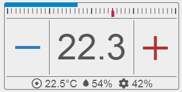
Für die View "ThermostatFuip" wurde ein komplett neues Widget entwickelt. Im Prinzip hat die View denselben Funktionsumfang wie die View "Thermostat", ist aber moderner und insbesondere für die Bedienung über Touchscreen besser. Außerdem unterstützt die View das FUIP-Sizing komplett, kann also in (fast) jeder Größe dargestellt werden.
Alles Weitere dazu steht in der FUIP-Doku.
Multifhem
Schon seit einer ganzen Weile ist es möglich, mehrere FHEMs (Backends) an ein FUIP-Device anzukoppeln. Welches Device dann in welchem FHEM liegt kann auf View-Ebene festgelegt werden. D.h. man kann sogar innerhalb einer Zelle verschiedene Views haben, die aus unterschiedlichen FHEMs kommen. Näheres dazu findet man in der "Device specific help" bei den Attributen backendNames, backend_* und defaultBackend.
Durch diese Änderungen sind zwei Attribute:
- Das Attribut fhemwebUrl ist weggefallen. Es wird durch ein backend_*-Attribut (normalerweise backend_home) und defaultBackend ersetzt. Wenn man noch fhemwebUrl verwendet, dann wird die Umstellung nach einem Update beim nächsten Restart automatisch vorgenommen.
- Das Attribut longPollType ist weggefallen. Es gab zum Schluss "ajax", "websocket" und "multifhem". Das wurde ein bisschen zu viel und es gibt jetzt nur noch "multifhem", welches mit klassischen Longpolls (also ajax) funktioniert. Das hat sich am stabilsten erwiesen.
04.01.2021
Alternative Pfadangaben im FHEMWEB-Device
Mit dem Attribut webname des FHEMWEB-Device kann der Pfad nach http://hostname:port/ angepasst werden. Allerdings hat bisher FUIP nicht funktioniert, wenn es über ein solches FHEMWEB-Device aufgerufen wurde. (Im Prinzip ruft man immer FHEMWEB auf. Von dort aus wird dann der Aufruf an FUIP weitergereicht.) Jetzt funktioniert FUIP auch, wenn das Attribut webname verwendet wurde und der Pfad nicht mit "fhem" anfängt.
08.03.2020
"Push" ohne Rahmen
Bei der View "Push" kann man jetzt den Rahmen weglassen. Dadurch wird auch das Icon selbst etwas größer dargestellt.
30.01.2020
Experimentelles "Longpoll über Ajax"
Wegen störrischer Probleme mit Websockets bei verschiedenen Apple-Geräten gibt es jetzt eine experimentelle Longpoll-Version, die per Ajax anstatt Websockets funktioniert. Diese kann mit dem Attribut longPollType aktiviert werden. Einfach longPollType auf "ajax" stellen.
Bitte beachten, dass das noch etwas experimentell ist und wahrscheinlich noch nicht ganz so gut funktioniert, wie die Websocket-Version. (...zumindest dort, wo die Websockets überhaupt gehen.)
26.01.2020
ReadingsList überarbeitet
Die View "ReadingsList" war bisher nur in Ausnahmefällen wirklich nützlich. Das sollte sich jetzt geändert haben. Man kann jetzt mehrere Devices wählen sowie die Readings auswählen, die man sehen will. Zusätzlich kann man einen Filterwert angeben, der bestimmt, welche Readings angezeigt werden. Letzteres reagiert auch auf Wertänderungen (solange sie als FHEM-Events ankommen), so dass Zeilen automatisch ein- bzw. ausgeblendet werden. Das ist z.B. für eine Anzeige aller offenen Fenster sinnvoll.
19.01.2020
Neue View "Calendar"
Die View "Calendar" stellt einen einfachen Wochenkalender dar. Sie arbeitet direkt mit einem oder mehreren Calendar-Devices.
Momentan ist die View noch ein wenig "experimentell".
27.12.2019
Fehlermeldungen beim Öffnen eines Popups
Seit dem Update von gestern kam es beim Öffnen von Popups zu unterschiedlichen Fehlermeldungen. Der Text dieser Fehlermeldungen hat angefangen mit "fuip_5_resize.js:11". Dieses Problem ist jetzt behoben.
Erweiterung der Dokumentation
Die FUIP-Dokumentation wurde im Abschnitt "Einführung" erweitert.
26.12.2019
Inhaltsverzeichnis zur Doku
Die FUIP-Dokumentation hat jetzt ein Inhaltsverzeichnis. Man kann auch Verweise (Links) direkt auf die einzelnen Abschnitte setzen.
Resizing von Views in Verbindung mit "snapTo"
Wenn das Attribut snapTo gesetzt war, dann gab es manchmal seltsame Effekte beim Ändern der Größe von Views. Manchmal hat sich die Größe einzelner Elemente (z.B. der Schrift) nach einem Seiten-Reload noch einmal geändert. Außerdem wurde die snapTo-Einstellung während der Größenänderung nicht beachtet.
Dies hat vor Allem die Views Reading, LabelReading, LabelTemperature und LabelHumidity betroffen und sollte jetzt auch für diese behoben sein.
Reading View: Alles auf derselben Ebene
Bei der View "Reading" war das Label und der Wert (bzw. Timestamp) nicht auf derselben Linie. Dies wurde behoben.
Reading View: Label ohne Doppelpunkt
Bei der View "Reading" wird nach dem Label jetzt kein Doppelpunkt mehr hinzugefügt. Wer einen haben will, muss ihn jetzt selbst reinschreiben.
25.12.2019
Neue View "Reading"
Es gibt jetzt eine neue View "Reading", die die Eigenschaften der Views LabelReading, LabelTemperature und LabelHumidity zusammenfasst. Möglicherweise werden diese drei Views in nächster Zeit wegfallen. (Dies wird dann keine existierenden FUIP-Oberflächen betreffen.)
Sizing bei "Label"-Views
Die Größenanpassung (bei sizing=resizable) für die Views LabelReading, LabelTemperature und LabelHumidity hat nicht richtig funktioniert (auch ohne Popups gab es noch ein Problem). Dies wurde korrigiert.
24.12.2019
Fröhliche Weihnachten!
Breite des Titels von Popups korrigiert
Nach einem FTUI-Update kam es zu "Überbreiten" der Titelzeilen von Popups. Dies wurde korrigiert.
Sizing bei "Label"-Views mit Popup
Die Größenanpassung (bei sizing=resizable) für die Views LabelReading, LabelTemperature und LabelHumidity hat nicht richtig funktioniert, wenn für diese Views ein Popup definiert war. Dies wurde korrigiert.
08.12.2019
WeekdayTimer funktioniert wieder
Wegen Änderungen im FHEM-Modul WeekdayTimer hat die View WeekdayTimer nicht mehr funktioniert. Dies wurde behoben.
07.12.2019
Doku für ViewIcon
Die View ViewIcon hat jetzt auch eine Dokumentation.
28.11.2019
Umstellung auf HTTP-POST
Bisher lief bei der Bearbeitung des Frontends fast sämtliche Kommunikation zum Backend (also FHEM) über HTTP-GET. Das bedeutet, dass relativ viele Daten über die URL übermittelt werden, wodurch diese sehr lang werden kann. Jetzt wurde auf HTTP-POST umgestellt. Damit sollte das Problem mit "zu langer URL" nicht mehr auftreten.
27.11.2019
Das FUIP-Doku-System
Im Konfigurations-Popup erscheint jetzt ein großes Doku-Feld, welches eine kontextsensitive Hilfe enthält. Je nachdem, worauf gerade der Focus ist, wird ein hoffentlich hilfreicher Text angezeigt. Außerdem gibt es einen neuen Eintrag im Menü "FUIP-Dokumentation", der ein neues Fenster mit einer ausführlichen Dokumentation öffnet.
Es sind allerdings noch nicht alle Views wirklich dokumentiert. Das ist aber für die nächste Zeit geplant.
20.11.2019
Hintergrundfarbe für Select-Optionen bei Style-Schema darkblue
Im Style-Schema "darkblue" war der Hintergrund der Optionen in Select-View (und anderen Views und Widgets, die das <option>-Element verwenden) weiß. Jetzt ist er dunkelgrau, wie bei allen anderen Style-Schemas.
18.11.2019
Automatisches Schließen von Popups - jetzt aber wirklich
Es gab einen Fehler in der Auslieferung der letzten Änderung. Dieser ist jetzt hoffentlich behoben.
16.11.2019
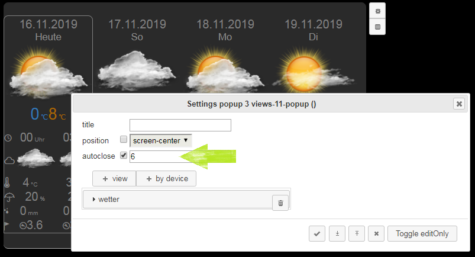
Automatisches Schließen von Popups
Auf dem Konfigurations-Popups für Popups (aka "Dialog") gibt es jetzt den Parameter autoclose. Hier kann man die Zeit eingeben, nachdem das Popup automatisch geschlossen wird. Die Eingabe erfolgt in Sekunden. Defaultwert ist 0, d.h. das Popup wird nicht automatisch geschlossen.
14.11.2019
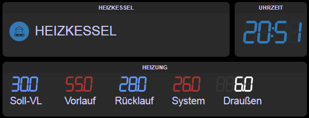
Neue Views 7SegmentClock und 7SegmentReading
Wer es gerne ein bisschen "retro" mag, kann sich jetzt mit den Views 7SegmentClock und 7SegmentReading ein paar schöne Anzeigen zusammenbasteln.
Danke an Waldmensch für Idee und Umsetzung des Widgets.
7SegmentClock
Diese View zeigt eine Digitaluhr im 7-Segment-Design an. Es wird die Client-Zeit (also die Zeit des Browsers) angezeigt. Die View hat u.A. folgende Parameter:
- seconds: steuert, ob man nur Stunden und Minuten oder auch Sekunden sieht.
- color: Farbe der Anzeige. Es können insbesondere die "FUIP-Farbsymbole" ausgewählt werden, so dass die Anzeige zum Rest der Oberfläche passt. Ansonsten kann man so ziemlich alles eingeben, was CSS als Farbe erlaubt.
Die restlichen Parameter sind die bei FUIP üblichen. Wählt man bei sizing "resizable" oder "auto", dann nimmt das Widget die Breite der View an. Die Höhe ist für die Darstellung egal.
7SegmentReading
Diese View zeigt numerische Readings im 7-Segment-Design an. Die View hat u.A. folgende Parameter:
- reading: Hier wird das Device und das Reading angegeben, welches angezeigt werden soll.
- digits: Anzahl der Ziffern, die insgesamt dargestellt werden sollen, also inklusive der Nachkommastellen. Falls negative Werte erwartet werden, muss man auch eine Ziffer für das Vorzeichen vorsehen.
- decimals: Anzahl der Nachkommastellen.
- colorscheme: Steuert die Farbgebung. Es sind folgende Werte vorgesehen:
- single: Es wird eine feste Farbe verwendet. Wird dieser Wert ausgewählt, dann erscheint der Parameter "color". Ansonsten bleibt "color" ausgeblendet.
- temp-air: Dies ist für Lufttemperaturen gedacht. Die Farbgebung erfolgt je nach Temperatur, so wie bei der View LabelTemperature, wenn man colors=air wählt.
- temp-boiler: Dies ist für die Wassertemperatur in einer Heizung gedacht. Die Farbgebung erfolgt je nach Temperatur, so wie bei der View LabelTemperature, wenn man colors=boiler wählt.
- humidity: Dies ist für relative Luftfeuchtigkeiten gedacht. Die Farbgebung erfolgt je nach Feuchtigkeit, so wie bei der View LabelHumidity.
- color: Farbe der Anzeige. Es können insbesondere die "FUIP-Farbsymbole" ausgewählt werden, so dass die Anzeige zum Rest der Oberfläche passt. Ansonsten kann man so ziemlich alles eingeben, was CSS als Farbe erlaubt.
Die restlichen Parameter sind die bei FUIP üblichen. Wählt man bei sizing "resizable" oder "auto", dann nimmt das Widget die Breite der View an. Die Höhe ist für die Darstellung egal.
12.11.2019
LabelTemperature, LabelHumidity: Titel ist per Default Device-Name
Bei den Views LabelTemperature und LabelHumidity ist der Titel (Feld "title" im Konfigurations-Popup) jetzt standardmäßig der Device-Name und nicht mehr fix "Temperatur" bzw. "Humidity".
11.11.2019
Dokumentation des FUIP-Moduls
FUIP enthält jetzt eine Moduldokumentation ("Device specific help" bzw. einen eigenen Abschnitt in der lokalen Commandref), momentan jedoch nur auf Deutsch. Bei Auswahl eines set-Kommandos oder eines Attributs in FHEMWEB werden auch die zugehörigen Beschreibungen angezeigt.
Nur noch "sinnvolle" set-Kommandos zur Auswahl
In FHEMWEB werden für das FUIP-Device nur noch solche set-Kommandos angeboten, die auch für den Anwender gedacht sind. get-Kommandos werden gar keine mehr angeboten, da diese nur für die interne Verwendung durch FUIP selbst gedacht sind.
10.11.2019
Beim Kopieren von Zellen springt FUIP zu FHEMWEB zurück
Wenn im Namen des FUIP-Device Großbuchstaben vorkommen, dann wurde beim Kopieren von Zellen zu FHEMWEB "zurückgesprungen". Dies ist jetzt behoben.
ShutterControl: Aktueller Stand im Select-Widget
In der ShutterControl-View wird jetzt im Select-Widget auch etwas angezeigt, wenn der aktuelle Stand zwischen zwei Werten liegt. (Das Select-Widget ist das Element rechts neben den Hoch/Stop/Runter-Tasten, mit dem man einen bestimmten Prozentwert anfahren kann.) Es wird jetzt immer der Wert angezeigt, der am nächsten am vom Rollladen-Device zurückgemeldeten Stand liegt. Wenn der Rollladen z.B. bei 88% steht, dann wird 90% angezeigt.
09.11.2019
HTML-View: Flexible Felder mit Anführungszeichen (")
Flexible Felder, bei denen ein (oder mehrere) Anführungszeichen im Wert vorkamen, haben zu Fehlern geführt. (Flexible Felder sind solche, die durch die Verwendung von "fuip-field" im HTML entstehen.) Dieses Problem wurde behoben, außer für Felder des Typs "setoptions". Hier sind nach wie vor keine Anführungszeichen möglich.
ShutterControl, UpStopDown: Visualisierung der aktuellen Bewegung
Bei den Views ShutterControl und UpStopDown kann man jetzt ein Reading angeben, welches die momentane Bewegungsrichtung enthält. Enthält dieses Reading den Wert für "hoch" (per Default "up"), dann wird der Pfeil nach oben aktiv ("on") dargestellt. Entsprechend beim Wert für "runter" der Pfeil nach unten. Die neuen Parameter der Views sind wie folgt:
- dirReading enthält das Reading mit der Richtungs-/Bewegungsanzeige. Defaultwert ist "direction". Es sind nur Readings des Device im Parameter "device" vorgesehen.
- dirUp enthält den Wert, den das Reading annimmt, wenn der Rollladen nach oben fährt. Defaultwert ist "up".
- dirDown enthält den Wert, den das Reading annimmt, wenn der Rollladen nach unten fährt. Defaultwert ist "down".
08.11.2019
Reconnect nach langem Handy-Schlaf
Bei manchen mobilen Browsern (bzw. mindestens bei Chrome auf meinem Telefon) konnte sich das Frontend nach "langem" Abschalten des Bildschirms nicht mehr mit FHEM verbinden. Man musste die Seite manuell aktualisieren. Dies wurde behoben (jetzt hoffentlich endgültig).
Für Interessierte: Der Browser hat nach einer Weile (etwa 15 Minuten bis 2 Stunden) ein beforeunload-Event gesendet, aber die Seite war nach dem Aufwachen immer noch da. Allerdings gab es weder ein visibilitychange-Event noch irgend ein anderes Event, welches verwendbar wäre.
Reconnect-Wartezeit-Eskalation
(Ich habe keine Ahnung, wie ich das ordentlich nennen soll.)
In manchen Situationen bricht die Verbindung ab, kann aber sofort wiederhergestellt werden. Andererseits sollte bei dauerhaftem Verbindungsabbruch nicht ständig versucht werden, eine Verbindung herzustellen. Daher wird jetzt der erste Versuch nach einem Abbruch sofort gemacht, der nächste etwas später usw. Die maximale Wartezeit zwischen zwei Verbindungsversuchen beträgt 5 Sekunden.
Keine Toast-Messages mehr bei Verbindungsproblemen
Durch die Overlay-Meldung (alles wird rot...) kann man Verbindungsprobleme kaum noch übersehen. Die (zusätzlichen) Toast-Meldungen waren eher verwirrend, da sie in der Regel dann auftauchen, wenn die Verbindung gerade wieder hergestellt wurde. Eine genauere Analyse von Verbindungsproblemen kann (und sollte) jetzt über das Log erfolgen.
Komplett fehlende Aktualisierung der Readings
Dieser Fall kam relativ selten vor, aber manchmal wurden überhaupt keine Readings aktualisiert. Derselbe Fehler hat auch dazu geführt, dass nach einem Verbindungssabbruch ständig und sehr schnell Shortpolls versucht wurden. Beides wurde behoben.
04.11.2019
Verbindung zum "Backend" stabilisiert
Da die Umstellung auf Longpoll (Ajax) vom 13.08.2019 nicht wirklich viel gebracht hat, wurde wieder auf Websocket umgestellt und der komplette Connect/Disconnect/Reconnect-Mechanismus überarbeitet. Dabei wurden insbesondere den Seltsamkeiten bei schlafenden Mobilgeräten Beachtung geschenkt. Leider musste dafür der "FTUI-Kernel" (also die Datei fhem-tablet-ui.js) übernommen und stark modifiziert werden. (D.h. eine Kopie davon. FUIP verändert keine fremden Dateien.)
Fehler-Overlay bei Verbindungsabbruch
Wenn die Verbindung zum Backend (also zu FHEM) abbricht, dann wird ein (momentan rotes) Overlay mit einer entsprechenden Meldung über die Oberfläche gelegt. Dies bleibt bestehen, bis die Verbindung wieder komplett wiederhergestellt ist.
Neues Trace- bzw. Log-Konzept
Um insbesondere den Besonderheiten auf Mobilgeräten auf die Spur zu kommen, wurde ein neues Log-Konzept für das Frontend entwickelt. Dafür gibt es drei neue Attribute im FUIP-Device:
- loglevel kann die Werte 0 bis 5 annehmen. Bei 0 wird kein Log geschrieben, bei 5 ein sehr detailliertes. Der Defaultwert ist 0.
- logareas steuert, aus welchem Bereich Logeinträge geschrieben werden. Es kann eine Komma-separierte Liste angegeben werden mit den folgenden Werten als Inhalt:
- base.init für die Initialisierungsphase
- base.poll für alles rund um den Lebenszyklus der Verbindung zum Backend
- base.update für die Aktualisierung der Werte am Frontend
- base.widget für die Widget-Basis
- unknown für alle Meldungen, die momentan keine "Area" angeben. Das sind insbesondere alle Log-Einträge, die von den Widgets selbst kommen.
Der Defaultwert ist eine leere Liste, wodurch Meldungen zu allen Bereichen geschrieben werden.
- logtype steuert, wohin das Log geschrieben wird. Es kann die folgenden Werte annehmen:
- console bedeutet, dass das Log auf die Javascript-Konsole geschrieben wird. D.h. es erscheint in den Entwicklerwerkzeugen/Developer Tools des Browsers. Dies ist der Defaultwert.
- localstorage bedeutet, dass das Log zuerst in den lokalen Speicher des Browsers geschrieben wird. (localStorage in JavaScript) Beim Aufruf der nächsten FUIP-Seite (bzw. Neuladen der Seite) wird das Log dann zu FHEM übertragen, welches es dann in eine Datei im Verzeichnis <fhem>/FHEM/lib/FUIP/log schreibt.
Der Dateiname enthält den Namen des FUIP-Device, die IP-Adresse des Frontends (also z.B. des Mobilgeräts) sowie ein Zeitstempel. So kann leicht zugeordnet werden, woher das Log kommt.
Icon-Liste entfernt
Es gab eine Möglichkeit, sich alle verwendbaren Icons über eine spezielle URL anzeigen zu lassen. Dies wurde entfernt. Wo Icons benötigt werden kann man sie sich über die Werthilfe auflisten lassen.
Timing beim Widget-Resizing optimiert
Beim Laden einer Seite kann die Größe mancher Widgets erst dann angepasst werden, wenn bestimmte andere Elemente bereits geladen und initialisiert sind. Das "Warten" darauf war etwas ungeschickt programmiert und hat dadurch zu viele Systemressourcen verbraucht. Dies wurde korrigiert.
Thermostat-View: HTML-Fehler
Beim Thermostat-View hat ein schließendes ">" gefehlt. Dies wurde korrigiert.
14.08.2019
Clock View korrigiert
Beim View "Clock" wurden zwei Fehler korrigiert:
- Es wurde oft (aber nicht immer) die Client-Zeit anstatt der Server-Zeit angezeigt.
- Wenn der Browser wieder sichtbar wurde, dann konnte es vorkommen, dass es bis zu einer Minute dauert, bis die aktuelle Zeit angezeigt wird. (z.B. wenn das Telefon/Tablet wieder "aufgeweckt" wurde)
Beide Probleme wurden behoben. FUIP verwendet jetzt ein eigenes Clock-Widget (fuip_clock anstatt clock).
13.08.2019
Umstellung von Websocket auf Longpoll
Im "FTUI-Kernel" gibt es einen Fehler, der dafür sorgt, dass Readings nach einer gewissen Zeit nicht mehr aktualisiert werden. Dies passiert bei der Verwendung von Websocket und insbesondere auf manchen Telefonen und Tablets. Da es nicht danach aussieht, dass dieser Fehler bald behoben wird, wurde auf den "alten" Longpoll-Mechanismus (Ajax) umgestellt.
12.08.2019
Absturz beim Export behoben
Beim Exportieren von Seiten oder Zellen konnte es zu einen kompletten FHEM-Absturz kommen, wenn der Seitenname (die Page-Id) Sonderzeichen enthalten hat. Dies wurde behoben.
28.07.2019
Chart: logProxy mit postFn und ähnlichem
Für manche SVG-Charts, die ein logProxy Device verwendet haben, hat der Chart View nicht funktioniert. Es wurde dann gar nichts angezeigt. Dies kam vor, sobald in der Spaltendefinition ein einfacher Anführungsstrich (single quote) verwendet wurde. Dies ist z.B. bei postFn der Fall. Dies ist jetzt behoben.
26.07.2019
Neuer View "HueSceneSelect" zum Auswählen von Hue-Szenen
Der View HueSceneSelect sieht aus wie ein "normaler" Select View (bzw. das FTUI select widget), ist aber speziell auf Szenen des Hue-Systems abgestimmt.
Die Zuordnung der Szenen zu Geräten und Gruppen (Räumen) ist mehr an die Hue-App (Android) angepasst und weicht bei der Benutzung möglicherweise etwas von HUEDevice bzw. HUEBridge in FHEM ab. Die wesentlichen Felder sind device und scenes:
- device: Hier können Hue-Gruppen ausgewählt werden, also HUEDevice-Geräte, die einer Gruppe (z.B. einem Raum) in der Hue-Bridge entsprechen. Außerdem kann die Hue-Bridge selbst ausgewählt werden. Einzelne Hue-Geräte können nicht benutzt werden. Wenn man eine Szene einem einzelnen Gerät (also normalerweise einer Lampe) zugeordnet hat, dann muss man hier die Hue-Bridge wählen.
- scenes: Hier kann man die Szenen auswählen, die man dem Benutzer zur Verfügung stellen will. (Also die nachher im Select-Widget auftauchen.) Das Feld selbst zeigt die internen IDs der Szenen an, daher sollte man die anzuzeigenden Szenen über die Werthilfe auswählen. Dort werden entweder die zur gewählten Gruppe passenden Szenen angezeigt oder alle Szenen, falls man die Hue-Bridge als device ausgewählt hat.
Vorauswahl bei Werthilfe zu Device-Feldern
Bei einigen Views sind nur bestimmte Geräte ("Devices") sinnvoll, aber bisher sind immer (fast) alle in FHEM definierten Geräte in der zugehörigen Werthilfe aufgetaucht. Jetzt gibt es hier in einigen Views eine Vorauswahl, so dass nur noch sinnvolle Geräte angeboten werden. Dies betrifft die folgenden Views:
- HueSceneSelect: Siehe oben.
- Batteries: Die Auswahl gilt hier für das Feld exclude. Es werden nur noch Geräte angeboten, die im Prinzip im Batteries-View auftauchen können.
- Chart: Nur SVG-Devices werden angeboten.
- DwdWebLink: Nur DWD_OpenData_Weblink-Devices werden angeboten.
- ReadingsGroup: Nur readingsGroup-Devices werden angeboten.
- ShutterTimer: Nur WeekdayTimer-Devices werden angeboten.
- Sysmon: Nur SYSMON-Devices werden angeboten.
- WeatherDetail: Nur PROPLANTA-Devices werden angeboten.
- WeatherOverview: Nur PROPLANTA-Devices werden angeboten.
- WebLink: Nur weblink-Devices werden angeboten.
- WeekdayTimer: Nur WeekdayTimer-Devices werden angeboten.
Aufräum- und Optimierungsarbeiten im Coding
Vor Allem im Coding zum Konfigurations-Popup wurde relativ viel aufgeräumt, umgebaut und vereinfacht. Wahrscheinlich (oder besser: hoffentlich) merkt man davon gar nichts...
07.07.2019
LabelReading: Jetzt kann auch die Größe eingestellt werden
Der View LabelReading hat jetzt auch das Feld sizing mit den "üblichen" Optionen. Das ganze funktioniert analog zu den Views LabelTemperature, LabelHumidity und STATE.
Grad Celsius/Fahrenheit in der Einheiten-Werthilfe geändert
Die UTF-8 Darstellungen für Grad Celsius bzw. Fahrenheit (℃ und ℉) nehmen in der Höhe mehr Platz ein als andere Zeichen. Dadurch kam es vor, dass das Layout des Views LabelReading etwas seltsam aussah. Dies wurde korrigiert, indem jetzt in der Werthilfe das Grad-Symbol mit einem großen C bzw. F verwendet wird (also °C bzw. °F).
11.06.2019
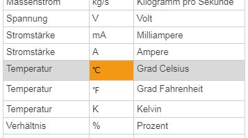
LabelReading: Einheiten
Im View LabelReading gibt es ein neues Feld unit. Wenn es gefüllt ist, dann wird der Inhalt an den Wert des Readings angehängt. Man kann prinzipiell alles mögliche in dieses Feld schreiben, gedacht ist es aber für Einheiten. Daher kann man in der zugehörigen Werthilfe einige der üblichen Einheiten auswählen. Dabei kann man sowohl das Einheitensymbol (z.B. ℃) als auch den Namen der Einheit (z.B. Grad Celsius) auswählen.
05.06.2019
MenuItem: Navigationsziel aus Reading holen (etc.)
Im View MenuItem (und damit auch HomeButton) ist die Ermittlung des Navigationsziels flexibler (und hoffentlich klarer) geworden. Dafür gibt es das neue Feld linkType mit den Optionen "fuip-page", "ftui-link" und "fhem-reading". Im Einzelnen...
- fuip-page bedeutet, dass das Navigationsziel eine Seite desselben FUIP-Device ist. Wenn man "fuip-page" auswählt, dann erscheint das Feld pageid mit einer Werthilfe, die alle (bereits generierten) Seiten des aktuellen FUIP-Device anzeigt. "fuip-page" ist sozusagen der Normalfall für ein Menü und damit auch die Voreinstellung.
- ftui-link bedeutet, dass das Navigationsziel ein allgemeiner Link ist, wie man ihn auch im Tablet-UI (ohne FUIP) verwenden könnte. Wenn man "ftui-link" auswählt, dann erscheint das Feld link. Der Wert in diesem Feld kann dann zum Beispiel folgendes bedeuten:
- Alles, was mit einem "/" beginnt, wird relativ zum FHEM-Server (auf dem FUIP läuft) interpretiert. Der Eintrag "/fhem?room=kitchen" würde FHEMWEB aufrufen und den Raum "kitchen" anzeigen.
Man kann damit auch zu Seiten anderer FUIP-Instanzen springen. Der Eintrag "/fhem/ui2/page/room/kitchen" würde zur Seite "room/kitchen" der FUIP-Instanz "ui2" springen.
- Relative links, die nicht mit "/" beginnen, rufen Dateien aus dem Tablet-UI Installationsverzeichnis auf. Der Eintrag "demo_ftui.html" startet (zumindest bei mir) die Tablet-UI Demoseite.
- Komplette URLs werden einfach so aufgerufen, wie sie sind. Man kann z.B. "http://google.de" eingeben und erhält... (Ja was wohl?)
- fhem-reading ermittelt das Navigationsziel aus einem Reading eines FHEM-Devices. Wenn man "fhem-reading" auswählt, dann erscheinen die Felder device und reading mit den üblichen Werthilfen. Das hier gewählte Reading muss einen Link wie oben unter "ftui-link" beschrieben enthalten. Das bedeutet, dass man nicht einfach den Namen einer FUIP-Seite eintragen kann (wie z.B. "room/kitchen"). Statt dessen muss der ganze Pfad inklusive FUIP-Device im Reading stehen, also z.B. "/fhem/ui/page/room/kitchen".
Bisherige Verwendungen von MenuItem und HomeButton müssen nicht angepasst werden. FUIP ermittelt für "alte" Seiten automatisch die richtige Kategorie. (Zumindest sollte das so sein.)
03.06.2019
Autosave-Dateien und die ConfigDB
Der Autosave-Mechanismus (siehe FUIP News vom 13.05.2019) war problematisch bei Verwendung der ConfigDB. Die Dateien wurden nicht mehr aus der Datenbank gelöscht. Außerdem hat die Werthilfe für set load in FHEMWEB nichts angezeigt. Im Prinzip war es damit fast unmöglich, automatisch gesicherte Zustände zu finden und zu laden.
Diese Probleme sollten jetzt behoben sein. Die Autosave-Dateien werden jetzt immer ins Dateisystem geschrieben, auch wenn die ConfigDB benutzt wird.
29.05.2019
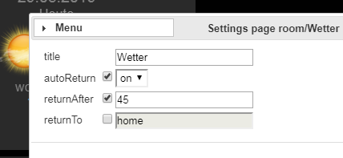
Auto-Navigation / Return Home
Man kann jetzt pro Seite einstellen, dass automatisch nach einer gewissen Zeit auf eine andere (FUIP-)Seite gewechselt werden soll. Damit kann man zum Beispiel ein automatisches "return home" implementieren. (Deshalb haben die neuen Felder ein "return" im Namen.)
Im Konfigurations-Popup für Seiten ("Page config") gibt es ein neues Feld autoReturn. Wenn man hier "on" wählt, dann erscheinen die Felder returnAfter und returnTo. Bei returnAfter gibt man die Zeit (in Sekunden) ein, nach der automatisch die Seite gewechselt werden soll. Bei returnTo wählt man die Seite aus, zu der navigiert werden soll. Es sind nur Seiten desselben FUIP-Device vorgesehen. Diese können über eine Werthilfe eingegeben werden.
Die automatische Navigation erfolgt nur bei Inaktivität. Der Timer wird zurückgesetzt wenn der Benutzer die Maus bewegt, auf etwas klickt oder eine Taste drückt.
Diese Einstellung wirkt sich auch auf den Bearbeitungsmodus (also locked = 0) aus. Allerdings könnte dadurch die Bearbeitung einer Seite unmöglich werden, wenn man returnAfter auf 0 oder 1 setzt. Daher wird im Bearbeitungsmodus immer erst nach mindestens 5 Sekunden wegnavigiert.
Window-View mit Zahlen in openstate/closedstate
Wenn beim Window-View Zahlen als openstate bzw. closedstate verwendet wurden, dann hat das ganze nicht richtig funktioniert. Es kam zu keiner Fehlermeldung, aber der angezeigte Zustand war nicht immer korrekt. Das wurde behoben.
28.05.2019
Lock/Unlock per set-Befehl und über's Menü
Der Mechanismus zum Sperren/Entsperren (das Attribut locked) wurde erweitert. Man kann jetzt über den Befehl set <fuip-device> lock sperren und mittels set <fuip-device> unlock entsperren. Der dadurch geänderte Zustand wird in einem Internal gespeichert, d.h. es ist keine "strukturelle" Änderung. (Bei "Save config" erscheint kein rotes Fragezeichen.)
Standardmäßig wirken sich die neuen Befehle erst einmal nur auf den aktuellen Client aus (also auf den Rechner, vor dem man sitzt). Dadurch kann man z.B. auf dem Tablet/Telefon nachsehen, wie sich eine Änderung tatsächlich auswirkt. Außerdem bekommen Familienmitglieder niemals die Zahnrädchen angezeigt. Man kann das (Ent)Sperren auch explizit für eine bestimmte IP-Adresse durchführen, indem man die IP-Adresse als Argument verwendet, also in etwa set <fuip-device> lock 192.168.178.45.
Das war jetzt die Kurzfassung. In Wirklichkeit ist es ein bisschen komplexer, da das Attribut locked und die neuen set-Befehle zusammenpassen müssen. Das ganze wurde so gebaut, dass folgendes Vorgehen möglich (und hoffentlich sinnvoll) ist:
- Nach dem Anlegen eines neuen FUIP-Device ist alles "offen". D.h. das Attribut locked ist nicht vorhanden und wird damit wie 0 behandelt, also entsperrt. Man kann also auf jedem Client alles ändern.
- Insbesondere wenn man das Flex-Layout (Attribut layout sitzt auf "flex".) verwendet, kann das tatsächliche (also "locked") Aussehen von der Änderungsansicht abweichen. Hier ist es dann sinnvoll, von Zeit zu Zeit zu sperren (set <fuip-device> lock), um sich den Zustand anzuschauen. Möglicherweise "entwickelt" man auch für andere Geräte auf einem größeren Bildschirm. In dem Fall kann man die "anderen" sperren mittels set <fuip-device> lock <ip-address>.
- Sobald das ganze einen verwendbaren Stand erreicht hat, schaltet man sozusagen auf "im Prinzip gesperrt" um, also attr <fuip-device> locked 1. Falls weitere Änderungen zu machen sind, kann man dann auf dem jeweiligen "Entwicklungs-Client" entsperren mittels set <fuip-device> unlock.
Der Zustand der Sperren (also das, was mit den neuen Befehlen gemacht wird), wird im Internal lockIPs gespeichert. Das bedeutet auch, dass der Zustand nicht gespeichert wird und nach einem FHEM-Neustart wieder auf den Zustand des Attributs locked zurückgesetzt wird.
Im Konfigurations-Popup für Zellen und Seiten gibt es auch einen neuen Eintrag "Lock", wobei man "This client" oder "All clients" wählen kann. Ein "Unlock" gibt es nicht, da es im gesperrten Zustand kein Konfigurations-Popup gibt.
Wechsel zu "Cell config" vom Konfig-Popup für Seiten
Bei der Auswahl von "Cell config" im Konfigurations-Popup für Seiten kam es zu einer Fehlermeldung. Das wurde behoben.
21.05.2019
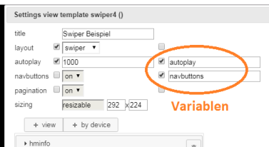
Variablen in View Templates mit Swiper
Variablen in View Templates für die Felder layout, autoplay, navbuttons und pagination haben nicht funktioniert. Variablen für diese Felder sind einfach "verschwunden", waren aber sozusagen unsichtbar noch vorhanden. Dies hat dazu geführt, dass bei bei der Verwendung des View Templates dort gesetzte Werte ignoriert wurden. Dies wurde korrigiert. Variablen funktionieren jetzt auch bei diesen Feldern.
Defaults für Variablen auf Feldern mit Defaultwert
Wenn in einem View Template eine Variable definiert wurde für ein Feld, das einen Defaultwert hat, dann wurde bei der Verwendung des View Templates der ursprüngliche Default-Wert verwendet, und nicht der im View Template angegebene Wert.
Beispiel: Der Default-Wert für autoplay beim Swiper-Layout ist "0" (also kein Autoplay). Setzt man nun im View Template einen Wert von "2000", dann wurde dies nicht übernommen, wenn für autoplay eine Variable definiert ist. Statt dessen wurde immer noch der Wert "0" verwendet, außer dies wurde in der Instanz (also bei der Verwendung) explizit überschrieben.
Dieses Verhalten war nicht gerade intuitiv und wurde so geändert, dass in diesem Fall der im View Template gesetzte Wert als Default verwendet wird (also "2000" im Beispiel).
19.05.2019
Batteries und Arlo-Geräte
Bei Arlo-Geräten ist das Reading batteryLevel ein Prozentsatz. Das wird jetzt vom Batteries-View richtig interpretiert.
Fehler im Swiper im Gridster-Layout
In der ersten Version zum Swiper (s.u.) kam es zu einem Fehler im Gridster-Layout. Im Bearbeitungsmodus (locked=0) wurden alle Views im Swiper ganz am Anfang "übereinander gestapelt" angezeigt. Dies wurde behoben.
Swiper
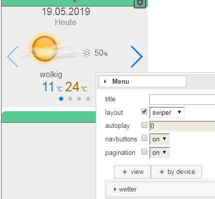Achtung: Dieses Feature ist momentan noch ein bisschen experimentell. Es sind zwar momentan (also am 19.Mai um 17:00) keine echten Probleme bekannt, aber es ist halt brandneu. Außerdem können sich einzelne Feinheiten noch ändern, wie z.B. die genaue Positionierung der Views im Swiper oder das Verhalten im flex-Layout (also die "Responsiveness").
FUIP bietet jetzt die Möglichkeit, Views in einen Swiper (oder auch Slider) zu packen. Dazu gibt es im Konfigurations-Popup für Zellen und View Templates das neue Feld layout. Wählt man hier "slider", dann kann man keine Views mehr direkt positionieren. Statt dessen liegen dann alle Views in einem Swiper-Widget und können "durchgeblättert" bzw. "gewischt" werden.
drag&drop: Es ist weiterhin möglich, Views aus einer Zelle mit Swiper-Layout heraus- bzw. hineinzuziehen. Beim "in den Swiper Fallenlassen" wird die View momentan als letzte "Slide" angefügt. D.h. es sieht im ersten Moment so aus, als ob die View verschwindet, sie ist aber nur ganz hinten.
autoplay: Wenn hier ein Wert ungleich 0 eingegeben wird, dann werden die einzelnen Views automatisch weitergeschaltet. Der bei autoplay angegebene Wert ist die Zeit in Millisekunden, nachdem zur nächsten View weitergschaltet wird.
navbuttons:Damit können die Navigationspfeile rechts und links ein- bzw. ausgeschaltet werden.
pagination:Damit können die Punkte unterhalb ein- bzw. ausgeschaltet werden.
Man kann immer nur die ganze Zelle (oder das ganze View Template) in einen Swiper umwandeln. Wenn man eine Zelle braucht, die außer dem Swiper noch andere Views enthält, dann muss man den Umweg über ein View Template gehen. D.h. man definiert ein View Template mit Swiper-Layout und verwendet dies dann in der Zelle.
Ähnliches gilt, wenn man eine Slide innerhalb des Swipers braucht, die aus mehreren Views besteht. Das geht nicht direkt, sondern auch nur über View Templates.
Ein Popup kann kein Swiper-Layout haben. Man kann allerdings ein View Template mit einem Swiper-Layout auf einem Popup verwenden.
13.05.2009
Autosave
FUIP speichert jetzt jede Änderung automatisch ab. Dadurch entstehen für jedes FUIP-Device bis zu 5 Autosave-Dateien im Ordner <fhem>/FHEM/lib/FUIP/config/autosave. (<fhem> ist normalerweise /opt/fhem) Das Kommando set...load akzeptiert dafür jetzt einen Parameter, über den angegeben werden kann, ob man die normal abgespeicherte Konfiguration laden will (lastSaved oder einfach leer lassen) oder eine der Autosave-Dateien. Dabei ist ersichtlich, von wann die jeweilige Autosave-Datei stammt.
Wenn man Änderungen in FUIP gemacht hat und FHEM beendet, ohne vorher ein set...save ausgeführt zu haben, dann wird nach dem nächsten Start eine entsprechende Meldung angezeigt. Diese Meldung erscheint in der FUIP-Konfigurationsoberfläche und in der Detailanzeige des FUIP-Device in FHEMWEB. Dabei ist egal, wie FHEM beendet wurde. Es funktioniert also auch für Abstürze und ähnliches.
08.05.2009
Fix vom 04.05.2019 wieder ausgebaut (Probleme mit closeConn bzw. Apple)
Die Korrektur (aka "der Hack") wurde wieder ausgebaut, da das Problem inzwischen in FHEM (genauer: FHEMWEB) behoben wurde. D.h. es ist jetzt ein "update" notwendig, falls das Problem (wieder) auftritt.
05.05.2009
"Kaputte" WeekdayTimer in FHEM
Die Views WeekdayTimer, ShutterTimer und ShutterControl können mit WeekdayTimer-Devices angelegt werden, die in FHEM nicht existieren. Die Views funktionieren dann auch im Prinzip, aber beim Speichern der Schaltzeiten wurde bisher in FHEM ein WeekdayTimer-Device erzeugt, das sich auf das Gerät "undefined" bezieht. Dies wurde korrigiert, so dass jetzt gar kein WeekdayTimer-Device mehr automatisch angelegt wird. Statt dessen erfolgt eine Fehlermeldung und man muss das WeekdayTimer-Device manuell in FHEM anlegen.
04.05.2009
Happy Star Wars Day!
Leere Seite wenn closeConn gesetzt und auf Apple-Geräten
Unter den folgenden Voraussetzungen konnte FUIP gar nicht mehr verwendet werden. Es wurde immer nur eine Fehlerseite angezeigt, da keine Daten vom Server (d.h. von FUIP) gesendet wurden (ERR_EMPTY_RESPONSE oder ERR_CONNECTION_CLOSED).
- Im FHEMWEB-Device ist das Attribut closeConn gesetzt oder
- als Frontend wird irgendetwas von Apple verwendet.
Dieses Problem wurde behoben.
03.05.2019
WeekdayTimer: Tastatur abschalten für Zeitangaben
Beim View WeekdayTimer ist für Zeitangaben jetzt die Tastatur per Voreinstellung abgeschaltet. D.h. man kann die Zeiten nur noch über die Drop-Down-Listen ändern und auf Mobilgeräten wird keine Tastatur mehr angezeigt. Dieses Verhalten kann mit dem Parameter timeInput geändert werden. (Das ganze hat keinen Einfluss auf die Felder Horizon und Offset. Dort kann man wie bisher immer nur über die Tastatur etwas eingeben.)
View Templates importieren
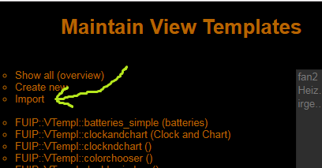Man kann exportierte View Templates jetzt auch importieren. Die Funktion is ein bisschen versteckt auf der Seite "Maintain View Templates". Der Name des neuen View Templates wird aus der importierten Datei genommen, falls noch kein View Template mit demselben Namen existiert. Ansonsten wird ein neuer Name automatisch erzeugt. Bei einem erfolgreichen Import wird man direkt auf die Bearbeitungsseite des neuen View Templates weitergeleitet.
Im Rahmen der dafür gemachten Änderungen wurden auch die anderen Import-Funktionen (für Popups, Zellen und Seiten) überarbeitet. Dies dürfte aber kaum Auswirkungen auf die Benutzung haben, außer vielleicht bei der Fehlerbehandlung.
Fehlerbehandlung beim Import mit fehlenden View Templates
Beim Import gab es bisher keine Fehlerbehandlung für fehlende View Templates. D.h. beim Import eines Objekts (Popup, Zelle oder Seite), welches ein View Template verwendet, dessen Definition im Zielsystem nicht existiert, kam es meistens zu einem kompletten FHEM-Absturz. Dies wurde behoben. Jetzt wird an Stelle des fehlenden View Templates ein spezieller View generiert, der eine Fehlermeldung anzeigt. Dieser View kann dann mit den normalen Bearbeitungsfunktionen durch etwas passendes ersetzt werden.
Das gleiche gilt auch für importierte View Templates.
Absturz im Konfigurationspopup bei fehlenden View Templates
Bei Verwendung eines nicht existerenden View Templates gab es einen FHEM-Absturz beim Schließen des Konfigurations-Popups (z.B. einer Zelle). Dieses Szenario war zwar bisher sehr unwahrscheinlich, der Fehler musste aber wegen der Fehlerbehandlung beim Import sowieso repariert werden.
Wetter-Views: Unnötige Meldungen in Developer-Konsole
Die Views WeatherDetail und WeatherOverview haben viele Meldungen in der Developer-Konsole (Javascript-Konsole) des Browsers erzeugt. Das ist für den Endbenutzer zwar meistens egal, hat aber bei der Fehlersuche gestört. Die Meldungen werden jetzt nicht mehr geschrieben.
30.04.2019
Attribut cellMargin für Zellzwischenräume
Mit dem Attribut cellMargin kann man jetzt den Platz zwischen den Zellen festlegen. Der Wert muss zwischen 0 und 10 liegen, der Standardwert ist 5. Um jede Zelle herum werden cellMargin Pixel frei gehalten. D.h. zwischen zwei Zellen ist zweimal so viel Platz (in Pixel) wie durch cellMargin festgelegt. Der Rand um den ganzen Anzeigebereich herum ist cellMargin Pixel breit.
Rand korrigiert bei layout=flex
Bei Verwendung des flex-Layouts war der Rand um den Anzeigebereich zu groß. Dies wurde korrigiert.
FHEMWEB-Overhead entfernt
Diese Änderung sollte (fast) keine sichtbaren Auswirkungen haben, außer ggf. etwas kürzeren Ladezeiten. Es wird jetzt kein FHEMWEB-Overhead (wie z.B. f18-Style Daten) mehr hinzugefügt und die HTTP-Header werden komplett von FUIP selbst kontrolliert.
29.04.2019
Wetter-Icons bei "Remote FHEM"
Bei den Views WeatherDetail und WeatherOverview wurden die Wetter-Icons nicht richtig angezeigt, wenn das Attribut fhemwebUrl verwendet wurde, aber dessen Inhalt am Ende keinen "/" hatte. Das sollte jetzt nicht mehr passieren.
28.04.2019
Batteries-View: Sortierung korrigiert
Auch bei Verwendung des Parameters labelRule wurde immer nach Alias und Gerätename sortiert. Dies wurde korrigiert, so dass jetzt immer nach dem tatsächlich angezeigten Namen sortiert wird.
25.04.2019
Batteries und PRESENCE-Geräte
Bei PRESENCE-Geräten ist das Reading batteryLevel ein Prozentsatz. Das wird jetzt vom Batteries-View richtig interpretiert. (Bei allen anderen bisher unterstützten Geräten ist batteryLevel eine Spannung, d.h. eine Angabe in Volt.)
Batteries: Flexibleres Label
Beim View "Batteries" kann man jetzt einstellen, wie das Label (also der dargestellte Name) zu jedem Gerät ermittelt wird. Dazu hat der View einen neuen Parameter labelRule. Man kann hier eine durch Komma getrennte Liste von Attributen, Internals und Readings der betreffenden Geräte eingeben. Das erste Attribut/Reading/Internal, welches beim jeweiligen Gerät existiert und auch einen Inhalt hat, wird dann als Label benutzt. Falls nichts gefunden wird, dann wird der Gerätename (also das Internal NAME) benutzt. Hier ein paar Beispiele. Angegeben ist jeweils der Inhalt des Felds labelRule und was es bewirkt.
- alias,NAME: Das ist die Voreinstellung. Damit ist alles so wie vorher: Falls ein Alias gesetzt ist, wird es benutzt, anonsten der Name.
- gassistantName,assistantName,alias,NAME: Damit wird zuerst nach einem gassistantName geschaut, dann nach einem assistantName. Ist beides nicht vorhanden, dann geht es weiter wie bei der Voreinstellung.
- NAME,alias: Damit wird immer der Gerätename (Internal NAME) benutzt, da dieser immer existiert. Dasselbe ist der Fall, wenn labelRule leer ist und meistens auch bei Tippfehlern.
24.04.2019
Toast-Messages abschaltbar
Die Meldungen, die z.B. bei Schaltvorgängen normalerweise links unten auftauchen, sind jetzt konfigurierbar. Dazu gibt es das neue Attribut toastMessages so lange man das Attribut nicht verwendet, bleibt alles wie vorher (auch selbstgebastelte Konfigurationen über HTML-Views müssten noch funktionieren). Das Attribut kann die folgenden Werte annehmen:
- all: Alles bleibt im Prinzip wie vorher, d.h. alle Meldungen werden angezeigt. Selbstgebastelte Toast-Konfigurationen funktionieren damit aber wahrscheinlich nicht.
- errors: Es werden nur noch Fehlermeldungen (also die roten Popups) angezeigt. Meldungen wie "set xy on" kommen nicht mehr.
- off: Es werden keine Meldungen mehr angezeigt, außer Fehlermeldungen, die von FUIP im Änderungsmodus (locked = 0) erzeugt werden. D.h. Lebenspartner oder andere Mitbewohner sehen wahrscheinlich tatsächlich gar keine Meldungen mehr.
Meldung beim Löschen verwendeter View-Templates
View-Templates, welche verwendet werden, können nicht gelöscht werden. Die dazugehörige Fehlermeldung gibt es schon eine Weile, sie wurde jetzt jedoch von "Toast" auf "Popup" umgestellt. Das bedeutet auch, dass sie vom Benutzer explizit quittiert werden muss.
20.04.2019
Batteries View auf Popups: Gerätenamen wieder lesbar
Beim View "Batteries" kam es bei der Ermittlung der Länge der Gerätenamen zu einem Fehler, wenn der View auf einem Popup verwendet wurde. Dadurch war der Gerätename extrem verkürzt, selbst wenn noch genug Platz zur Verfügung stand. Dies wurde korrigiert.
18.04.2019
Umbenennen von View Templates mit Verwendung auf Popups
Beim Umbenennen von View Templates wurden Views auf Dialogen ignoriert. Deshalb blieb bei View Template Instanzen auf Popups der alte Name stehen und es kam nach einem Neustart von FHEM oder einem "set load" zum Absturz wie am 14.04.2019 beschrieben. Dabei war es egal, ob das Popup Teil eines (anderen) View Templates war oder direkt durch einen View in einer Zelle ausgelöst wurde. Dieses Problem sollte jetzt nicht mehr auftreten.
Verwendungsnachweis auch für View Templates auf Dialogen
Im Verwendungsnachweis ("Where-used list") von View Templates wurden ebenfalls Views auf Dialogen ignoriert. Deshalb konnten auch View Templates gelöscht werden, wenn diese nur auf Popups verwendet wurden.
Verwendungsnachweis für View Templates "kompakter"
Bisher wurden Seiten (oder View Templates) mit mehrfachen Verwendungen eines View Templates in dessen "Where-used list" mehrfach angezeigt. Das ist jetzt nicht mehr der Fall.
Kein Absturz mehr bei fehlenden View Templates
Es erfolgt jetzt (hoffentlich) kein Absturz mehr, wenn ein View Template zwar verwendet wird, aber nicht (mehr) definiert ist. Statt dessen wird jetzt an Stelle der fehlerhaften View Template Instanz eine Fehlermeldung angezeigt.
14.04.2019
View Templates auf Popups in View Templates
Beim Aufruf einer FUIP-Seite, insbesondere der Übersicht der View Templates, konnte es zu einem FHEM-Absturz kommen, ggf. mit einem Eintrag im FHEM-Logfile wie etwa:
Can't call method "getStructure" on unblessed reference at ./FHEM/lib/FUIP/View/ViewTemplInstance.pm
Der Fehler war möglicherweise nicht klar reproduzierbar und erschien beinahe zufällig. Das Problem hing mit Popups in View Templates zusammen, welche wiederum selbst View Templates verwenden. (Also View Templates auf Popups in View Templates.) Dies wurde korrigiert.
Verbesserte Fehlerbehandlung bei fehlenden View Templates
Für die Analyse von Fehlern wie oben beschrieben wurde die Fehlerbehandlung an dieser Stelle verbessert. Jetzt wird bei fehlenden View Templates eine Meldung sowie ein Stacktrace ins FHEM-Log geschrieben. (...auch wenn das jetzt hoffentlich nicht mehr passiert.)
Export von View Templates
View Templates können jetzt in eine Datei exportiert werden. (Ähnlich wie Seiten und Zellen.) Allerdings gibt es bisher noch keine Import-Funktion.
Vereinheitlichung der "Neuer Name"-Dialoge
Die Dialoge (Popups) zum Eingeben neuer Namen von Seiten und View Templates wurden vereinheitlicht. Dadurch kann es zu kleinen Änderungen im Aussehen und im Ablauf beim Anlegen, Kopieren, Importieren und Umbenennen kommen.
12.04.2019
Batteries View: Geräte explizit herausnehmen
Der View Batteries bietet jetzt die Möglichkeit, unerwünschte Geräte explizit herauszunehmen. Dazu gibt es den neuen Parameter "exclude", der eine Komma-separierte Liste von Geräte-Namen (Device Keys) akzeptiert. Wie üblich gibt es auch eine Werthilfe.
10.04.2019
Popups nah am "Auslöser" positionieren
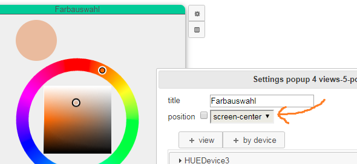Bisher wurden Popups (Dialoge) immer zentriert auf dem Bildschirm ausgegeben. Das kann man jetzt über das Feld "position" im Konfigurations-Popup des Dialogs ändern. Bei Angabe von "starter-area" wird das Popup beim auslösenden Widget angezeigt. D.h. FUIP versucht, die linke obere Ecke des Popups in die Mitte des auslösenden Widgets zu legen. Falls rechts unterhalb des "Auslösers" nicht genug Platz ist, dann wird das Popup entsprechend oberhalb bzw. links vom Auslöser angezeigt.
Bisher konnte es außerdem vorkommen, dass bei "gescrolltem" Bildschirm nicht das komplette Bild beim Aktivieren des Popups grau überdeckt wurde. Man konnte dann auch das Popup nicht mehr durch Klicken auf den Bildschirm schließen. Dies wurde korrigiert.
03.04.2019
STATE View resizable
Der View STATE kann jetzt in der Größe angepasst werden ("sizing resizable" und "sizing auto"). Dabei passt FUIP sowohl die Schriftgröße als auch die Größe des Icons (falls angegeben) an.
Zusätzlich gibt es den neuen Parameter "lines", mit dem angegeben werden kann, wie viele Zeilen in den View passen sollen. Damit kann die Schriftgröße gesteuert werden: Je kleiner der Wert bei "lines", desto größer die Schrift.
Wenn eine der neuen Möglichkeiten verwendet wird, dann werden auch zu lange Texte im STATE abgeschnitten. Da dieses Verhalten nicht ganz kompatibel zum bisherigen ist, wird bei "sizing fixed" und "lines 3" die bisherige Logik verwendet.
01.04.2019
MenuItem, HomeButton resizable
Bei den Views MenuItem und HomeButton kann jetzt auch "sizing resizable" gewählt werden. Dies ist vor Allem dann sinnvoll, wenn die Basisbreite (Attribut baseWidth) relativ klein gesetzt wird. Es wird empfohlen, in diesem Fall nicht direkt MenuItem (bzw. HomeButton) zu verwenden, sondern ein entsprechendes View Template.
25.03.2019
WeekdayTimer: Wochentage wieder anklickbar
Bei mehreren Instanzen des WeekdayTimer auf einer Seite (dazu zählen auch solche in einem Popup sowie die Views ShutterControl und ShutterTimer) konnten die Wochentage nur auf einer Instanz ausgewählt werden. Beim Klick auf die Wochentage "kaputter" Instanzen hat zum Teil eine andere Instanz des WeekdayTimers reagiert. Das wurde behoben.
23.03.2019
WeekdayTimer: Position des "Timepicker"-Popups korrigiert
Beim WeekdayTimer View gab es einen Fehler bei der Positionierung des Popups zur Auswahl der Schaltzeiten. Die Position wird (vom jquery datetimepicker Plugin) bei kleinen Fensterbreiten nicht richtig berechnet, wenn horizontal gescrollt wird. Dadurch wurde das Popup auf kleinen Bildschirmen zum Teil nicht im sichtbaren Bereich angezeigt. Dies wurde korrigiert.
22.03.2019
Repariert: LabelHumidity und LabelTemperature mit Popup
Wenn fü ein LabelHumidity oder LabelTemperature ein Popup definiert wurde, dann ist der View selbst von der Anzeige verschwunden. Es war auch nicht möglich, das Popup aufzurufen. Genau genommen waren die Views noch vorhanden, deren Größe wurde aber vom System auf Null geändert. Dies wurde behoben.
Repariert: Verschwindende Texte auf Popups mit Style-Schema bright-mint
Das Style-Schema "bright-mint" hatte einen Fehler, durch den Texte auf Popups unsichtbar wurden. Bei der Bearbeitung des Popups (des Dialogs) waren die Texte sichtbar, aber nicht beim Aufrufen des Popups. Dies wurde repariert. Auch auf Popups haben Texte jetzt die Farbe "foreground".
Repariert: Einmal definierte Popups konnten nicht mehr gelöscht werden
Bei Views, für die man ein Popup definieren kann, war es nicht möglich, das Popup wieder zu löschen. Man konnte zwar die Checkbox zum "popup"-Eintrag auf dem Konfigurations-Popups abschalten, das hatte aber keinen Effekt und beim nächsten Öffnen des Konfigurations-Popups war die Markierung wieder gesetzt. Dies wurde behoben.
19.03.2019
Batteries-View: Geräte mit "ignore" werden ignoriert
Der Batteries-View zeigt keine Geräte mehr an, bei denen das Attribute "ignore" auf einen Wert ungleich 0 gesetzt ist.
18.03.2019
Validierung der Namen von Variablen und "flexiblen Feldern"
Ab jetzt ist es nicht mehr möglich (oder zumindest sehr schwierig), Variablen (in View Templates) und "Flexible Felder" (im HTML-View) mit "problematischen" Namen anzulegen. Es gelten dieselben Einschränkungen wie für Namen von View Templates (siehe den Eintrag vom 15.03.2019). Außerdem gibt es eine Reihe von reservierten Namen, die nicht verwendet werden dürfen. Dies sind...
- Für Variablen: class, defaulted, flexfields, height, id, sizing, templateid, title, variable, variables, views, width
- Für Flexible Felder: class, defaulted, flexfields, height, html, popup, sizing, title, variable, variables, views, width
Beim HTML View kann es jetzt außerdem zu Meldungen bezüglich Fehlern kommen, die vorher von FUIP ignoriert wurden. D.h. es waren auch bisher Fehler, aber jetzt wird es dem Benutzer explizit mitgeteilt.
Fehlermeldung und Log-Einträge bei Fehlern in der cfg-Datei
Die größte Teil der Konfiguration eines FUIP-Device wird nicht in der Datei fhem.cfg gespeichert, sondern in einer für jedes FUIP-Device eigenen Datei. (Diese Datei liegt normalerweise im Verzeichnis "/opt/fhem/FHEM/lib/FUIP/config" und heißt "FUIP_<name>.cfg", wobei <name> der Name des FUIP-Device ist.)
Diese Datei wird beim Start von FHEM geladen bzw. bei einem expliziten "set <name> load". Dabei kann es zu Fehlern kommen, insbesondere aufgrund von Fehlern in FUIP selbst oder auch durch die Verwendung von "problematischen" Namen. Bisher kam es bei solchen Fehlern zu Abstürzen oder es wurden die generierten Default-Seiten angezeigt. Insbesondere letzteres ist immer noch der Fall, aber jetzt wird in solchen Fällen wenn möglich eine Fehlermeldung angezeigt, sowie entsprechende Einträge im FHEM-Logfile erzeugt.
16.03.2019
Validierung der Namen von View Templates
Ab jetzt ist es nicht mehr möglich (oder zumindest sehr schwierig), View Templates mit "problematischen" Namen anzulegen. Im Eintrag von gestern steht, was jetzt noch erlaubt ist. Alte View Templates sollten weiterhin funktionieren (insoweit sie das mit einem "problematischen" Namen überhaupt getan haben). Es wird aber beim Anzeigen solcher View Templates eine Warnung angezeigt und es wird empfohlen, den Namen zu ändern.
15.03.2019
View Templates umbenennen
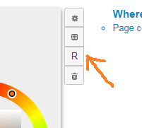View Templates können jetzt umbenannt werden. Dabei werden auch alle Verwendungen in Zellen und anderen View Templates beachtet. Da es in JQuery-UI kein gutes "Umbenennen"-Icon gibt, hat die zugehörige Taste einfach ein "R" für "Rename".
Der Name eines View Templates nur aus normalen Buchstaben (a-z, A-Z), Ziffern (0-9) und dem Unterstrich (_) bestehen. Das erste Zeichen darf keine Ziffer sein. Bisher prüft FUIP den eingegebenen Namen noch nicht, was sich aber relativ sicher in Zukunft ändern wird.
13.03.2019
WeekdayTimer und ShutterControl: Dropdown-Listen korrigiert
Bei den Views WeekdayTimer und ShutterControl sind die Dropdown-Listen (Wertauswahl) häufig an ungeschickten Positionen erschienen oder waren teilweise verdeckt. Dadurch konnten die gewünschten Optionen nicht immer ausgewählt werden. Dies wurde korrigiert. Dadurch hat sich auch das Aussehen dieser Listen leicht geändert. Dies dürfte aber keinen Unterschied in der Funktionalität ergeben.
12.03.2019
LabelReading kann jetzt auch Timestamps anzeigen
Der LabelReading-View kann über den Parameter "content" dazu gebracht werden, den Timestamp des Readings anzuzeigen. Es ist möglich, den Wert, den Timestamp oder beides anzuzeigen. Der Timestamp wird im Format "12.03. 17:28" angezeigt.
ShutterControl jetzt auch mit "inverted_shutter"
Der ShutterControl-View hat jetzt einen Parameter "levelType". Man kann zwischen "shutter" und "inverted_shutter" auswählen. Die Funktion ist ansonsten so wie inverted_shutter beim WeekdayTimer-View.
Batteries auch mit Prozentwerten im Reading "battery"
Der Batteries-View versteht jetzt auch Prozentwerte im Reading "battery". Bisher wurde "battery" nur als Text ("ok" oder nicht "ok") ausgewertet.
11.03.2019
Thermostat mit minTemp, maxTemp und step
Beim Thermostat-View ist jetzt der Temperaturbereich (minTemp, maxTemp) sowie die Schrittweite (step) einstellbar. Bitte selbst darauf achten, dass die Werte einigermaßen sinnvoll sind. Als Dezimaltrennzeichen muss der Punkt und nicht das Komma verwendet werden.
10.03.2019
SpinDim mit einstellbarer Schrittweite
Beim View SpinDim kann jetzt über den Parameter "step" die Schrittweite eingestellt werden.
Colorwheel auf Popups und in View Templates
Da war noch einiges faul. Das sollte jetzt alles gehen. Außerdem waren noch ein paar Feinheiten beim Sizing noch nicht wirklich "fertig".
09.03.2019
Neuer View: Colorwheel
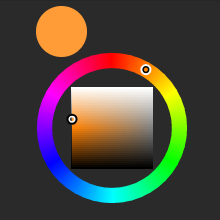Es gibt jetzt den neuen View "Colorwheel". Man kann damit Geräte steuern, die Farben im RGB-Format akzeptieren bzw. bereitstellen, wie z.B. Hue-Leuchten. Der View entspricht ungefähr dem FTUI-Widget "colorwheel", wobei FUIP hier eine eigene Implementierung bereitstellt, die beim Sizing flexibler ist.
07.03.2019
Farbauswahl und Werthilfe für Icons repariert
Bei der Farbauswahl ("Colours" im Menü) und bei der Werthilfe für Icons kam es zu Fehlermeldungen wie "SecurityError" oder "cssRules cannot be accessed". (Möglicherweise tauchten die Meldungen an der Oberfläche nicht auf.) Die Farbauswahl bzw. die Icon-Liste wurde nicht richtig angezeigt bzw. hat "ewig" geladen. Das Problem sollte jetzt gelöst sein.
Das ganze ist im Zusammenhang mit externen CSS-Dateien aufgetaucht. Bisher konnte aber noch nicht ermittelt werden, wodurch diese externen CSS-Dateien eingebunden wurden.
WeekdayTimer kann jetzt "inverted_shutter"
Als "levelType" kam "inverted_shutter" hinzu. Dadurch wird die Reihenfolge der Prozentangaben umgedreht und "Auf" und "Zu" werden vertauscht. D.h. "Auf" entspricht minLevel (meistens 0) und "Zu" entspricht maxLevel (meistens 100). Das klingt im ersten Moment sehr ähnlich wie beim Vertauschen von minLevel und maxLevel, allerdings ist dann auch die Zuordnung der Prozentangaben zu den Werten in FHEM umgedreht.
| levelType | minLevel | maxLevel | Ergebnis (Anzeige in FUIP:Wert in FHEM) |
| shutter | 0 | 100 | Auf:100, 90%:90, 80%:80,... 20%:20, 10%:10, Zu:0 |
| shutter | 100 | 0 | Auf:0, 90%:10, 80%:20,... 20%:80, 10%:90, Zu:100 |
| inverted_shutter | 0 | 100 | Auf:0, 10%:10, 20%:20,... 80%:80, 90%:90, Zu:100 |
| inverted_shutter | 100 | 0 | Auf:100, 10%:90, 20%:80,... 80%:20, 90%:10, Zu:0 |
Sinnlose Fehlermeldungen entfernt
Bei manchen Aktionen wurde eine sinnlose Fehlermeldung angezeigt, wie z.B. bei "Make view template" oder auch manchmal beim Hinzufügen eines Views zu einer Zelle. Die Fehlermeldung erschien in einem Popup und zeigte meist nur eine Zahl an. Diese Fehlermeldungen sollten jetzt nicht mehr hochkommen.
06.03.2019
Neuer View: WeekdayTimer
Der neue View "FUIP::View::WeekdayTimer" ist eine Erweiterung des Views ShutterTimer und des im ShutterControl integrierten WeekdayTimer-Widgets. Anders als die beiden "alten" Views erzeugt WeekdayTimer allerdings nicht automatisch ein Popup, sondern wird ganz normal in die Zelle eingebunden. Falls man den WeekdayTimer auf einem Popup haben möchte, muss man explizit den View FUIP::View::Popup verwenden bzw. einen anderen Popup-fähigen View.
Es wird empfohlen, den View ShutterTimer nicht mehr zu verwenden, sondern nur noch WeekdayTimer. Vorsicht: Das Device beim WeekdayTimer muss in FHEM ein Device vom Typ WeekdayTimer sein, also nicht das zu steuernde Device wie beim ShutterControl.
Zusätzlich zum ShutterControl bzw. ShutterTimer bietet der WeekdayTimer die folgenden Möglichkeiten:
- "save config" kann automatisch ausgelöst werden. (Feld "saveconfig" im Konfigurations-Popup)
- Außer Prozentsätzen (für Rollläden) können auch Temperaturen oder zwei beliebige Werte (wie z.B. on/off) gesetzt werden. (Feld "levelType" im Konfigurations-Popup)
- "sizing" (auto/fixed/resizable) wird unterstützt
- Wenn der View WeekdayTimer auf einem Popup platziert wird, dann schließen die Tasten "Speichern" und "Abbrechen" das Popup.
FUIP News
...ab jetzt gibt es die Funktion "FUIP News". Sie ist erreichbar im Menu des Konfigurations-Popups unter "FUIP News".